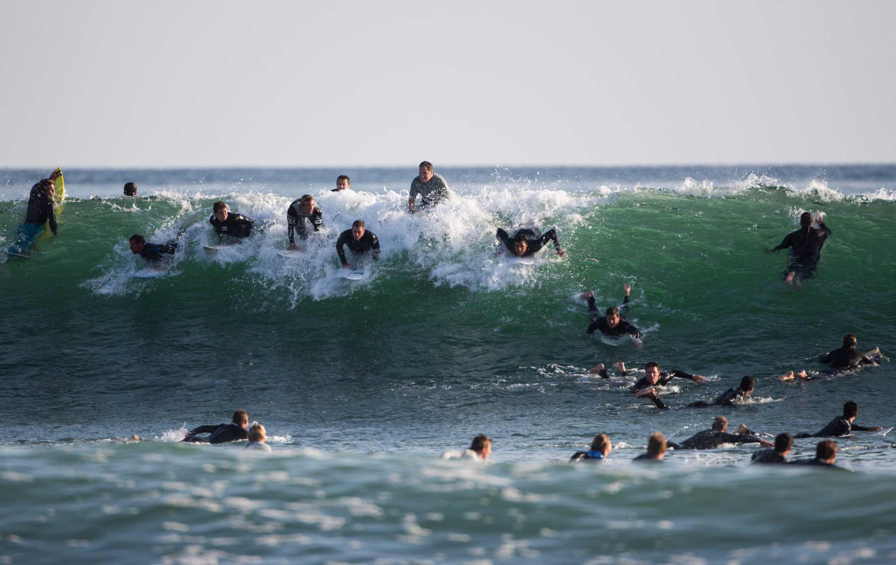

Trestles
... is located on the edge of San Diego County, and is part of San Onofre State Beach. It is a collection of amazing surf breaks, known as Uppers, Lowers, Middles, The Point, Old Mans, and Dog Patch. It is an extremely crowded spot.
